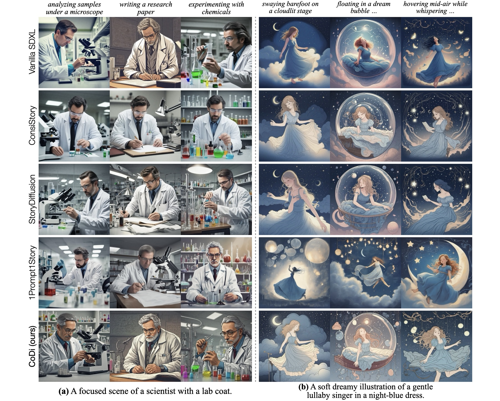
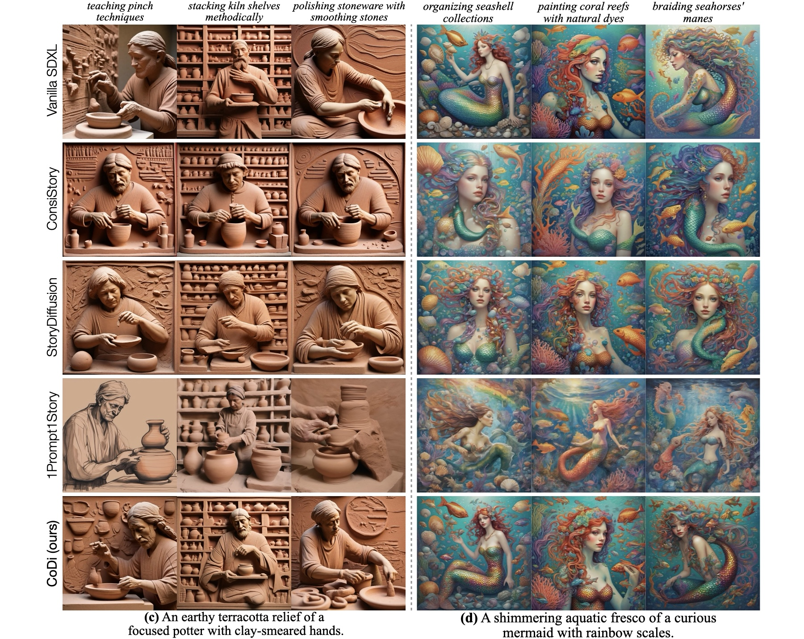
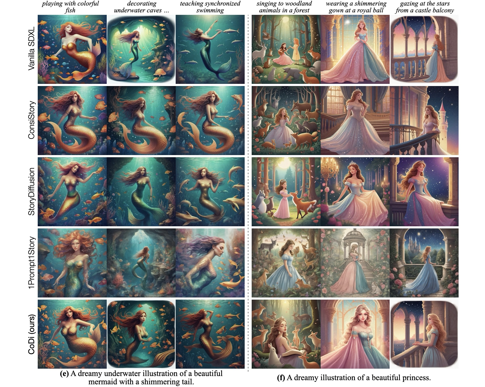

Video
Abstract
Subject-consistent generation (SCG)—aiming to maintain a consistent subject identity across diverse scenes—remains a challenge for text-to-image (T2I) models. Existing training-free SCG methods often achieve consistency at the cost of layout and pose diversity, hindering expressive visual storytelling. To address the limitation, we propose subject-Consistent and pose-Diverse T2I framework, dubbed as CoDi, that enables consistent subject generation with diverse pose and layout. Motivated by the progressive nature of diffusion, where coarse structures emerge early and fine details are refined later, CoDi adopts a two-stage strategy: Identity Transport (IT) and Identity Refinement (IR). IT operates in the early denoising steps, using optimal transport to transfer identity features to each target image in a pose-aware manner. This promotes subject consistency while preserving pose diversity. IR is applied in the later denoising steps, selecting the most salient identity features to further refine subject details. Extensive qualitative and quantitative results on subject consistency, pose diversity, and prompt fidelity demonstrate that CoDi achieves both better visual perception and stronger performance across all metrics.
Model Architecture

Illustration of our CoDi. (a) Extract subject masks (Mid and Mn) by averaging the image-text cross-attention at the final denoising timestep for subject-related tokens (e.g., "fairy"). (b) Compute the OT plan Tn using the cost matrix and the probability masses. (c) Identity transport (IT) operates in the early denoising steps to transfer reference subject features to target images in a pose-aware manner. (d) Identity refinement (IR) operates in the late denoising steps to refine subject details using selective cross-image attention mechanism.
Visualization
  BibTeX
@article{gao2025codi,
title={Subject-Consistent and Pose-Diverse Text-to-Image Generation},
author={Gao, Zhanxin and Zhu, Beier and Yao, Liang and Yang, Jian and Tai, Ying},
journal={arXiv preprint arXiv:2507.08396},
year={2025}
}